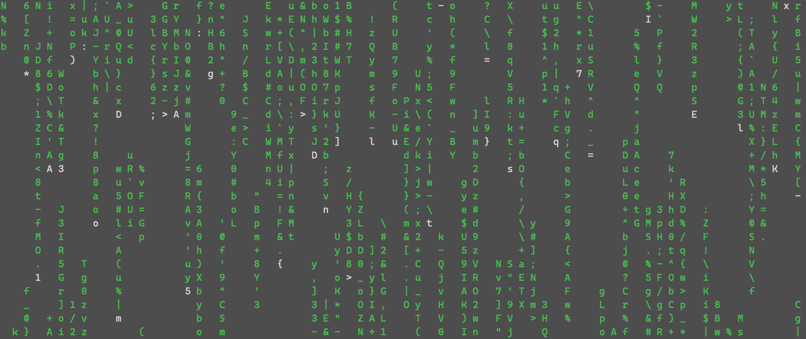
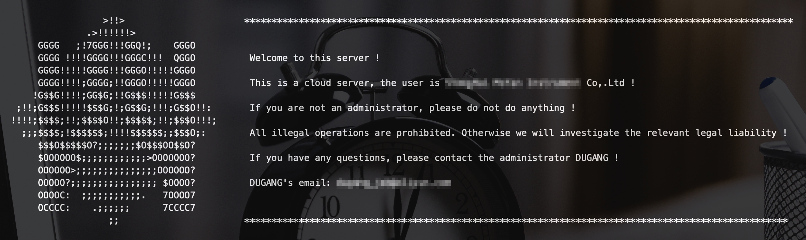

Linux is a set of free-to-use and free-to-spread Unix-like operationg system. It is a multi-user, multi-task, multi-threaded and multi-CPU operationg system based on POSIX and Unix. It can run major Unix tools, applications and network protocols. It supports 32-bit and 64-bit hardware. Linux inherits Unix’s network-centric design idea and is a stable multi-user network operationg system. Next, I’ll introduce some knowledge about Linux configuration.
基础操作
窗口模式与命令行模式切换：
ctrl+alt+[F1-F6]或者init [0-6]或者startx1
2
3
4
5
6
7
8各个模式：
0 -> 关机
1 -> 字符界面单用户模式
2 -> 字符界面多用户模式，没有网络
3 -> 字符界面多用户模式
4 -> 没有在使用，用户可以自定义
5 -> 图形界面
6 -> 重新启动运行级别
runlevel—> 查看当前运行级别systemctl get-default—> 查看开机默认运行级别systemctl set-default multi-user.target—> 修改开机默认运行级别为 3systemctl set-default graphical.target—> 修改开机默认运行级别 5系统语言设置
修改系统语言/etc/locale.conf网络设置
无线网络连接iwiw dev—> 查看可用网卡ip link set 网卡名 up—> 启用网卡iw 网卡名 scan | grep SSID—> 查看所有可用的无线网络wpa_supplicant -B -i 网卡名 -c <(wpa_passphrase "wifi名" "密码")—> 连接wifi
无线网络连接ipip addr—> 查看可用无线网卡ip link set wlp3s0 up—> 打开无线网卡 wlp3s0ip link show wlp3s0—> 查看网络 wlp3s0 网络接口的状态wpa_supplicant -B -t wlp3s0 -c <(wpa_passphrase "wifi名称" "wifi密码")—> 网络连接dhclient wlp3s0—> dhcp 自动分配 ipip addr show wlp3s0—> 查看分配的 ip 地址
无线网络连接nmcliyum install NetworkManager*—> install nmclinmcli r wifi on—> start wifinmcli dev wifi—> scan available wifinmcli --ask dev wifi connect SSID—> connect networknmtui—> graphical network connect防火墙
firewall-cmd --query-port=8020/tcp—> 查询端口是否开启firewall-cmd --add-port=8020/tcp --permanent—> 开启端口systemctl start firewalld—> 启动 firewalldsystemctl status firewalld—> 查看 firewalld状态systemctl disable firewalld—> 停止 firewalldsystemctl stop firewalld—> 禁用 firewalld，关闭防火墙systemctl
systemctl是CentOS7的服务管理工具中主要的工具，它融合之前service和chkconfig的功能于一体systemctl start firewalld.service—> 启动一个服务systemctl stop firewalld.service—> 关闭一个服务systemctl restart firewalld.service—> 重启一个服务systemctl status firewalld.service—> 显示一个服务的状态systemctl enable firewalld.service—> 在开机时启用一个服务systemctl disable firewalld.service—> 在开机时禁用一个服务systemctl is-enabled firewalld.service—> 查看服务是否开机启动systemctl list-unit-files|grep enabled—> 查看已启动的服务列表systemctl --failed—> 查看启动失败的服务列表配置firewalld-cmd
firewall-cmd --version—> 查看版本firewall-cmd --help—> 查看帮助firewall-cmd --state—> 显示状态firewall-cmd --zone=public --list-ports—> 查看所有打开的端口firewall-cmd --reload—> ，重启防火墙，更新防火墙规则firewall-cmd --get-active-zones—> 查看区域信息firewall-cmd --get-zone-of-interface=eth0—> 查看指定接口所属区域firewall-cmd --panic-on—> 拒绝所有包firewall-cmd --panic-off—> 取消拒绝状态firewall-cmd --query-panic—> 查看是否拒绝firewall-cmd --zone=public --add-port=80/tcp --permanent—> 在public中永久开放80端口，--permanent永久生效，没有此参数重启后失效）添加端口firewall-cmd --reload—> 重新载入端口firewall-cmd --zone=public --query-port=80/tcp—> 查看端口是否开启，--zone为作用域，默认为publicfirewall-cmd --zone=public --remove-port=80/tcp --permanent—> 删除端口firewall-cmd --list-all-zones—> 查看所有的zone信息firewall-cmd --get-default-zone—> 查看默认zone是哪一个firewall-cmd --zone=internal --change-zone=p3p1—> 临时修改接口p3p1所属的zone为internalfirewall-cmd --add-service=http—> 暂时开放httpfirewall-cmd --permanent --add-service=http—> 永久开放httpfirewall-cmd --permanent --zone=public --remove-service=ssh—> 从public zone中移除服务firewall-cmd --reload—> 重新加载配置SElinux
Security Enhanced Linux (SELinux)是一个访问控制服务，基于安全策略加强对系统资源的访问控制。在系统安全的基础上，解决“Maydo to
SELinux是一个Linux内核的扩展模块，通过LSM(Linux Security Module)框架在链接时被加入到Linux内核中，SElinux虽然是一款用来提高系统安全性的软件，但也会和好多服务都冲突。
查看当前状态getenforce
临时关闭setenforce 0
永久关闭
修改 /etc/selinux/config 中的 SELINUX=enforcing 为 SELINUX=disabled
CentOS端口命令
netstat -lntp—> 查看监听(Listen)的端口netstat -antp—> 查看所有建立的TCP连接
查看Linux系统主机名：1
2# hostname
localhost.localdomain查看服务器IP地址：
1
2
3# ifconfig|grep 'inet addr:'|grep -v '127.0.0.1'|cut -d: -f2|awk '{ print $1}'
192.168.17.238
192.168.1.9查看linux网关：
1
2# route |grep default
default 192.168.1.1 0.0.0.0 UG 0 0 0 em1查看linux打开服务：
1
2
3# chkconfig --list|grep 启用 #查看开启的服务
sshd 0:关闭 1:关闭 2:启用 3:启用 4:启用 5:启用 6:关闭
httpd 0:关闭 1:关闭 2:关闭 3:启用 4:关闭 5:关闭 6:关闭查看服务器DNS配置：
1
2
3# cat /etc/resolv.conf
nameserver 192.168.0.66
nameserver 202.106.0.20其他网络信息：
1
2
3# iptables -L #查看防火墙规则
# route -n #查看路由表
# netstat -s #查看网络统计信息.bashrc
PS1="[\u@\h \d \A \W]\$"
\[\e[F;Bm\] cotent \[\e[0m\] —> 颜色设置
下面是我的设置PS1="[\[\e[37;41m\]\u@\h\[\e[0m\]\[\e[37;42m\]\d \A\[\e[0m\]\[\e[37;43m\]\W\[\e[0m\]\[\e[37;0m\]]\$\[\e[0m\]"
配置软件源
安装epel源 rpm -ivh http://dl.fedoraproject.org/pub/epel/8/Everything/x86_64/Packages/e/epel-release-8-5.el8.noarch.rpm
常用工具及用法
Linux中有好多非常有用的命令行工具，也有好多好玩的命令行工具，下面笔者介绍一些工具，可能一次性写的不全，后面会慢慢的补上去。
cmatrix
- MAC 系统安装方法：
brew install cmatrix - RedHat 系Linux安装方法：
sudo yum install cmatrix - Ubuntu 系Linux安装方法：
sudo apt-get install cmatrix Arch 系Linux安装方法：
sudo pacman -S cmatrix如果没有配置相应的软件园，没法用包管理工具直接安装的可以选择编译安装，安装方法如下：
- 访问 GitHub 项目地址
https://github.com/abishekvashok/cmatrix在 releases 中下载 cmatrix-1.2.tar，也可以使用wget命令下载 - 解压 cmatrix-1.2.tar ，解压的时候会用到
tar，如果没有安装的话请使用命令安装，以 CentOS 为例sudo yum install tar，解压命令为tar -xvf cmatrix-1.2.tar - ‘cd cmatrix’
- ‘./configure’
- ‘make && make install’，如果编译失败的话，使用
yum install ncurses-devel安装 ncurses-devel 后再编译安装
使用方法：直接用 cmatrix 命令就可以运行，还有一些可选项如下1
2
3
4
5
6
7
8
9
10
11
12
13-a：异步滚动
-b：启用粗体字符
-b：所有粗体字符（覆盖-b）
-f：强制启用linux$term类型
-l：Linux模式（使用矩阵控制台字体）
-o：使用旧式滚动
-h：打印使用和退出
-n：无粗体字符（覆盖-b和-b，默认）
-s：”屏幕保护程序“模式，在第一次按键时退出
-x：窗口模式，如果您的 `xterm` 使用 `mtx.pcf`，则使用
-v：打印版本信息并退出
-u [0-10]（默认4）：屏幕更新延迟
-C [颜色]：将此颜色用于矩阵（默认为绿色）
运行效果如下

Python
- python3.7 install
problem：ModuleNotFoundError:No module named '_ctypes'
solution：yum install libffi-devel -y
Git
Git是一个开源的分布式版本控制系统，可以有效、高速地处理从很小到非常大的项目版本管理。Git 是 Linus Torvalds 为了帮助管理 Linux 内核开发而开发的一个开放源码的版本控制软件。下面简单介绍一下Git。
Git的工作流程是：Working Directory —> Stage(Index) —> Repository(HEAD)git config --global user.name "name" ;set user namegit config --global user.email "email" ;set user emailgit config --list ;list all config
git init ;The current directory is Git’s repository directory.Initialized empty Git repository
git add file README.md ;add file to Stagegit commit -m "add a readme file" ;commit file form Stage to repositorygit status ;Check git’s current working statusgit reset README.md ;Undo the stage changes to working directorygit checkout -- README.md ;Overwrite the contents of working directory with the contents of the stagegit log ;View historical submission history
Working Directory —(add)—> Stage(Index) —(commit)—> Repository(HEAD)
Working Directory <—(checkout)— Stage(Index) <—(reset)— Repository(HEAD)
git reset --soft/--mixed/--hard HEAD~git reset [id]
git diff ;Compare Stage and Working Directorygit diff id1 id2 ;Compare snapshots(repository) with id 1 and snapshots(repository) with id 2git diff id ;Compare repository with id and the contents of the working directorygit diff HEAD ;Compare the latest snapshots(repository) and the contents of the working directorygit diff --cached id ;Compare repository with id and the contents of the stage
git commit --amend -m "new instructions" ;Edit the latest submission instructionsgit rm name ;Delete files from gitgit mv [oldname] [new name] ;Modify file name
git branch [branch name] ;Create a branch which name is [branch name]git checkout [branch name] ;Switch branch which name is [branch name]git log --decorate [--oneline] ;Show all references to the submissiongit log --decorate --oneline --graph --allgit merge [branch name] ;Merge branch to the current branchgit branch -d [branch name] ;Delete branchgit branch --delete [branch name]git show ;Detailed display of the last change recordgit log -p [file name] ;View detailed edit history of a file
用户管理
Linux 有很严格的用户权限，我们可以通过用户管理命令创建或删除用户，设置用户组以及为每个用户设置权限。下面我介绍以下Linux中常用的用户管理命令。
useradd—> 建立用户userdel—> 删除用户usermod—> 修改用户信息passwd—> 设置密码chage—> 密码老化groupadd—> 添加组groupdel—> 删除组账户groupmod—> 修改组newgrp—> 转换组groups—> 显示组gpasswd—> 添加用户到组whoami—> 显示当前用户名称who—> 显示登陆用户id—> 显示用户信息pwck—> 检测账户grpck—> 检测用户组账户chsh—> 设置shellchfn—> 修改用户信息
进程管理
进程是正在运行的程序实体，并且包括这个运行的程序中占据的所有系统资源，比如说CPU（寄存器），IO，内存，网络资源等。很多人在回答进程的概念的时候，往往只会说它是一个运行的实体，而会忽略掉进程所占据的资源。比如说，同样一个程序，同一时刻被两次运行了，那么他们就是两个独立的进程。接下来我介绍一些常用的进程管理命令。
at—> 定时运行命令，指定时刻执行指定命令atq—> 查询已经设定的命令序列atrm—> 删除已经设定的命令序列batch—> 系统负载低于一个设定值（0，8），执行设定的命令序列bg—> 后台运行命令，使一个被挂起的进程在后台执行 （快捷键 Ctrl + z）fg—> 挂起程序，使一个被挂起的命令在前台执行jobs—> 显示后台程序kill—> 终止进程crontab—> 安装、删除或列出任务表，该配置由cron守护进程在后台执行ps—> 查看权限、查看系统中进程的状态pstree—> 列出当前进程的树状结构top—> 显示系统当前的进程状态nice—> 改变程序执行的优先权等级renice—> 修改一个正在运行的进程的优先权sleep—> 暂停进程nohup—> 退出系统之后继续工作pgrep—> 查找当前运行进程并列出匹配给定条件的进程pidchkconfig—> 检查、设置系统的各种服务
进程一般分为：交互进程、批处理进程、守护进程
进程组成：代码段、数据段、堆栈段PCB 在进程核心堆栈底部，不需要额外分配空间
poppen() 与 system 类似，它以管道方式处理输出
磁盘管理
df—> 查看磁盘信息，显示磁盘文件系统与使用情况du—> 某目录下所有文件和子目录的占用字盘的大小dd—> 从标准输入或文件读取数据，依指定格式转换数据，再输出fdisk—> 磁盘分区mount—> 加载文件系统umount—> 卸载文件系统mkfs—> 建立各种文件系统mkfs.ext2—> 建立ext2/ext3文件系统mkbootdisk—> 建立系统启动盘fsck—> 检查文件系统fsck.ext2—> 检查ext2/ext3文件系统hdparm—> 检测、显示与设定磁盘参数mkswap—> 建立交换分区dump—> 配分文件系统restore—> 还原文件sync—> 将内存缓冲区数据写入磁盘e2label—> 设定或显示ext2/ext3分区卷标badblock—> 检查磁盘quota—> 显示磁盘已使用空间与限制quotacheck—> 检查磁盘的使用空间与限制quotaoff—> 关闭磁盘空间限制quotaon—> 开启磁盘空间限制quotastats—> 显示磁盘空间限制repquota—> 检查磁盘空间限制状态parted—> 磁盘分区工具
文件系统处理
文件系统是操作系统用于明确存储设备（常见的是磁盘及基于NAND Flash的固态硬盘）或分区上的文件的方法和数据结构；即在存储设备上组织文件的方法。操作系统中负责管理和存储文件信息的软件机构称为文件管理系统，简称文件系统。文件系统由三部分组成：文件系统的接口，对对象操纵和管理的软件集合，对象及属性。从系统角度来看，文件系统是对文件存储设备的空间进行组织和分配，负责文件存储并对存入的文件进行保护和检索的系统。具体地说，它负责为用户建立文件，存入、读出、修改、转储文件，控制文件的存取，当用户不再使用时撤销文件等。下面介绍一些常用的文件操作命令。
cat—> 显示文本文件内容less—> 分屏显示文件grep—> 查找字符串head—> 显示文件内容的前多少行tail—> 显示文件内容的后多少行sort—> 按照顺序显示文件内容uniq—> 忽略文件中的重复行diff—> 比较两个文件diffstat—> 读取diff的结果，统计各文件的插入、删除、修改等差异计量file—> 通过探测文件内容来判断文件类型date—> 显示日期和时间script—> 记录执行过的所有命令以及命令的输出apropos—> 在whatis资料库中搜寻特定字串locate—> 查找符合条件的文件basename—> 显示文件或目录的基本名称chattr—> 改变文件属性，防止关键文件被修改cksum—> 打印每个文件的CRC校验以及字节统计cmp—> 比较文件差异split—> 切割文件dirname—> 显示文件除名字外的路径findfs—> 改变列表或用户ID查找文件系统ln—> 链接文件或目录lndir—> 链接目录内容lsattr—> 改变文件属性od—> 以八进制显示文件内容paste—> 把每个文件以列对列的方式一列一列的合并stat—> 以文字的格式显示inode内容tee—> 读取标准输入的数据，并将其内容输出成文件tmpwatch—> 删除临时文件tree—> 以树状图显示目录内容umask—> 指定建立文件时预设的权限掩码chmod—> 改变文件或目录权限chgrp—> 改变文件或目录所属群组chown—> 改变文件拥有者或群组
网络管理
Linux 继承了 Unix 的特性，具有非常强大的网络功能，其支持所有的英特网协议，包括 TCP/IPv4、TCP/IPv6 和链路层拓扑程序等，且可以利用 Unix 的网络特性开发出新的协议栈。下面介绍一些常用的网络管理命令。
arp—> 管理系统中的ARP高速缓存arpwatch—> 监听ARP记录adsl—> 调制解调器命令ifconfig—> 设置网络接口iwconfig—> 设置无线网卡hostname—> 显示主机名 （主机名配置文件：/etc/hosts）ifup—> 激活设备ifdown—> 禁用网络设备mii-tool—> 调整网卡模式route—> 设置路由表netstat—> 查看网络连接ping—> 检测网卡接口minicom—> 设置调制解调器pppd—> 建立PPP连接pppstats—> 显示PPP连接状态chat—> 拨号命令traceroute—> 显示数据包到主机间的路径rcp—> 远程复制finger—> 查找并显示用户信息tcpdump—> 网络数据分析器ip—> 网络集成命令工具
远程连接提示
Linux 远程用 SSH 登录会有提示信息，这个提示能够用来发布信息或者告诉登录者一些使用注意事项，下面我介绍以下登录提示信息的设置方法。
登录提示信息设置的文件有三个，分别为：/etc/issue、/etc/issue.net、/etc/motd， 其中1
2
3
4
5
6
7
8
9
10
11
12
13/etc/issue # 本地登录显示信息，本地登陆前
/etc/issue.net # 网络登录显示信息，登陆后显示
/etc/motd # 登陆后提示信息
注：\m：机器类型
\r：内核版本
\d：日期
\t：时间
\l：登录到的终端
\n：主机名
\s：操作系统类型
\u：已经登录的用户数
\v：操作系统版本
下面是笔者自己的服务器的提示信息

下面分享一个好看的字符 logo 以及笔者自己的提示信息形式1
2
3
4
5
6
7
8
9
10
11
12
13-----------------------------------------------------------------------------------
* .=""=. *
* / _ _ \ *
* | d b | *
* \ /\ / Welcome to RICS computer server ! *
* ,/'-=\/=-'\, This is the server developed by *
* / / \ \ XXXXXXXX XXXXX XXXXXXXXXX XXXXXXXXXX CO.LTD for *
* | / RICS \ | XXXXXX XXXXXX XXXXXX CO.LTD ! *
* \/ \ / \/ Don't touch anyone except the administrator ! *
* '. .' *
* _|`~~`|_ *
* /|\ /|\ *
-----------------------------------------------------------------------------------